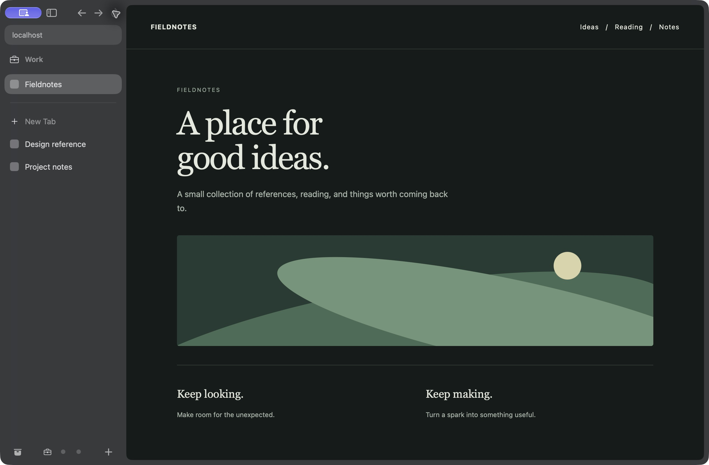

Good with your hands.
A command palette, a tab switcher, familiar Mac shortcuts, and rebindable controls. Go from thought to tab.
Every keyboard shortcutFor the delightfully tab-happy.
For your work brain, your weekend brain, and your seventeen-tabs-about-one-thing brain.

A Work Space keeps pinned pages and project tabs together, with Personal and Explore a click away.
Captured in Vane · Dark mode · Example browsing content
Pin the keepers. Fold the folders. Let Today’s tabs be today’s tabs. Your sidebar has room for all of them.
Get to know the sidebarOpen a link in Little Vane, take a quick look, then move it to your main window when it deserves a longer stay.
Meet Little VaneLive Folders bring your GitHub pull requests into the sidebar. They refresh as work opens, changes, and closes.
How Live Folders workA command palette, a tab switcher, familiar Mac shortcuts, and rebindable controls. Go from thought to tab.
Every keyboard shortcutReader mode clears the page around the words, with text size and serif or sans-serif controls.
Reading and Picture in PictureKeep watching in Picture in Picture. A tab playing detached video stays awake.
⌥ ⌘ PSave, manage, and fill passwords through the macOS keychain. Separate profiles, separate credentials.
Password detailsBuilt-in ad and tracker blocking, private windows, and camera and microphone decisions per site.
Privacy and blockingImport history and bookmarks from Arc, Safari, Firefox, and Chromium browsers. Bring passwords from CSV exports, too.
Session restore, archived tabs, and crash recovery help you return to the pages you were using.
Tabs and the LibraryUnpacked web extensions, Web Inspector, a JavaScript console, and View Source.
For developersPause, resume, find a file in Finder, and choose where downloads land. Browse saved records in the Library.
Getting startedSwiftUI, AppKit, and system WebKit. Native settings, menus, VoiceOver labels, and reduced motion support.
Explore the sourcemacOS 26 or later · In active development